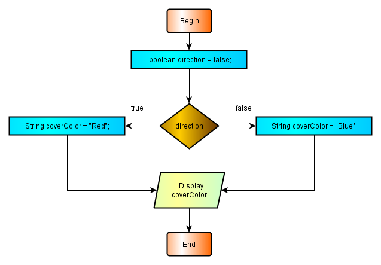
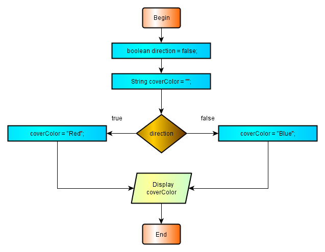
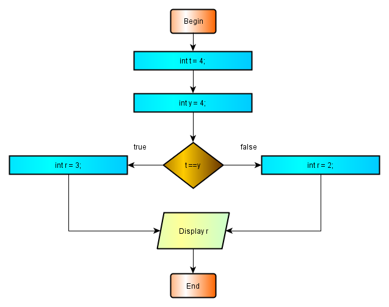
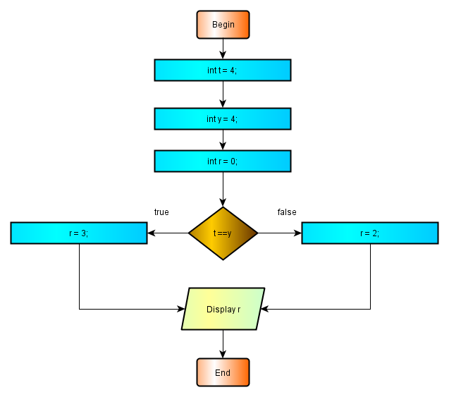

2.7.3 -Ternary Operator
Java (and JavaScript) ternary operator is the sole operator who takes three operands. This operator is a shortcut of if - else statements. In a simplest form, when only one statement per alternative is executed, the use of the ternary operator may be summarized as follows:
operand1 ? operand2 : operand3
In this algorithm, the first operand is a boolean variable or an expression resulting to a single boolean value, namely true or false. The other operands are normal executable statements. The algorithm of the ternary operator may be read as "if operand1 is true, execute operand2, else execute operand3". If the result of the operand1 is not true or false, a compile-time error is generated.
In this respect, ternary operator algorithm may be considered as a concise replacement of the if then else statements. The main application of the ternary operator is at alternating assignments. A simple example is as follows:
package preliminary; public class Ternary { public static void main(String[] args){ boolean direction = false; String coverColor = direction ? "Red" : "Blue"; System.out.println("Color of the Cover" + coverColor); } // end main } //end class TernaryOperator
The result of this program :
Color of the Cover : Blue
The flowchart of the Ternary.class :

2.7.3 - Image 1 Flowchart of the Ternary.class
the use of the if then else statements. The alternative program with if - else is given below :
package preliminary; public class TernaryWithIf { public static void main(String[] args){ boolean direction = false; String coverColor = ""; if(direction) { coverColor = "Red"; } // end if else { coverColor = "Blue"; } // end else System.out.println("Color of the Cover : " + coverColor); } // end main } //end class TernaryWithIf
The result of this program :
Color of the Cover : Blue
The flowchart of the TernaryWithIf.class :

2.7.3 - Image 2 Flowchart of the TernaryWithIf.class
To stress the boolean data type of the first operand, consider another illustrative flowcharts and programs given below:

2.7.3 - Image 3 Flowchart of the TernaryOperator.class
Program listing of this flowchart :
package preliminary; public class TernaryOperator { public static void main(String[] args){ int t = 4; int y = 4; int r = t == y ? 3 : 2; System.out.print("Value of r : "); System.out.println(r); } // end main } //end class TernaryOperator
The result of this program :
Value of r : 3
Altough not obligatory, it is advisable to take the boolean expression, labeled as operand1 in the parenthesis to avoid confusion and enhanhace the program readability as :
int r = (t == y) ? 3 : 2;
The flowchart of the same program with if - else structure:

2.7.3 - Image 4 Flowchart of the TernaryOperatorWithIf.class
Program listing of this flowchart :
package preliminary; public class TernaryOperatorWithIf { public static void main(String[] args){ int t = 4; int y = 4; int r = 0; if(t == y) { r = 3; } // end if else { r = 2; } // end else System.out.print("Value of r : "); System.out.println(r); } // end main } //end class TernaryOperatorWithIf
The result of this program :
Value of r : 3
The operands 2 and 3 are not restricted to a single statement. They might be a statement block consisting with many statements, but this is not practical and will reduce the program readability.
The use of the ternary operator is not restricted to the distribution of the values in an assignment. It may be used in the distribution of the the return values of a non-void method and even more less frequented but theoretical possible expressions. But the main usage is with the assignments.
By inspecting the flowcharts, we can conclude that the programs in which the ternary operator is used, are more concise than the alternative ones with traditional if - else paradigm. The later has one statement more than the former but, the programs with the ternary operator are less readable and somewhat confusing as compared to the alternative ones with if - else methodology. The choice is at the programmer but the performance gain with the usage of the ternary operator might not as high as for venture the confusion brought with ternary operator. Better stay away from confusion for clearer readable and easily maintanable codes.